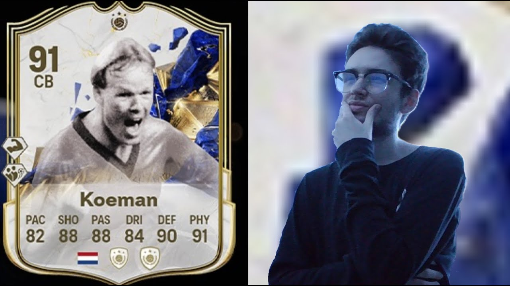
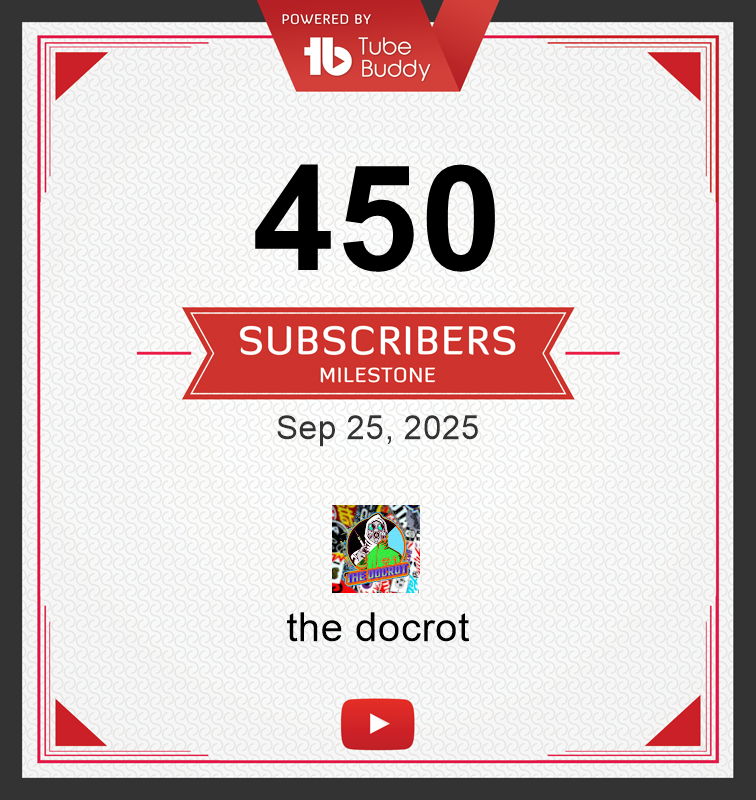

ONE CHANNEL. ALL THE CHAOS.
FOOTBALL.
FEAR.
GOOD TIMES.
From football career storylines to Dead by Daylight surprises—catch the highlights, livestreams, Shorts and whatever happens next.
FC27 career mode ✳ Dead by Daylight ✳ gaming & more

HAPPENS NEXT?
A good match. A bad jump scare. One more upload.
#KeepPlayingNUMBERS THAT MOVE.
THE LATEST DROPS.
New videos, gaming moments and highlights, straight from YouTube.
New uploads are one click away.
Loading the latest available videos. You can also visit the channel directly.
Go to YouTube ↗LIVE & UNFILTERED.
Find the current broadcast when available, plus recent livestream replays.
Check the latest live action
Live observations are updated periodically. Check YouTube for the latest broadcast status.
Recent stream replays
Visit stream archive ↗Loading recent public stream replays…
Check YouTube streams ↗Live observations come from a periodically updated shared feed. Old observations expire; this is not a second-by-second tracker.
PICK YOUR GAME.
Different games. Same energy. Find your way into the channel.
FOOTBALL
STORIES.
FC27 player career episodes, challenges, victories, and the occasional painful defeat.
Explore football videos ↗DEAD BY
DAYLIGHT.
Perks, wild updates, stream highlights, and surviving one more match.
Explore horror videos ↗SHORTS &
MORE.
Quick moments, stream clips, and all the bits that don't fit into one game.
Watch Shorts ↗EVERY STEP COUNTS.
Real keepsakes saved from the original website. These are past milestones, not live stats.

.jpg)
.jpg)
THE GAME DOESN'T
STOP HERE.
Follow Thedocrot on your favourite platform and catch the next thing before it drops.